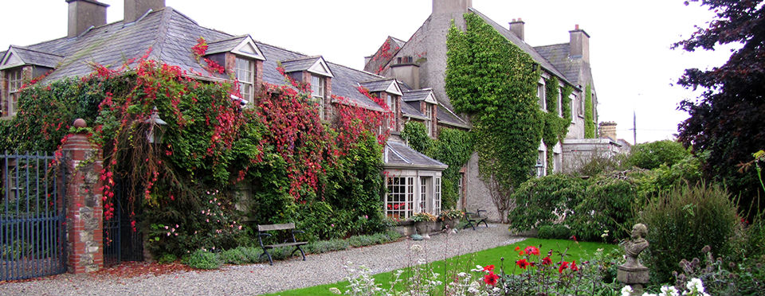

Collon House and Garden

Ardee Street, Collon, Co. Meath
Tel: 087 2355645
Email: Contact Us
Collon House, steeped in history, is full of character and charm; its gracious rooms are exquisitely furnished with period antiques and paintings, retaining the atmosphere of early Georgian living, making this a rare opportunity to experience less than one hour from Dublin City Centre, and thirty minutes from Dublin Airport
Collon House is a perfect location from which to enjoy the wonderful treasures of the Boyne Valley. Bru na Boinne (Newgrange) prehistoric megalithic sites, The Battle of the Boyne visitors centre at Oldbridge, Slane Castle, Old Mellifont Abbey and Monasterboice High Crosses are all less than twenty minutes drive from Collon House
Built in 1740 in the Irish Long House style, Collon House was the home of Anthony Foster, Lord Chief Baron of the Exchequer. His famous son John "Speaker" Foster (born 1740), was the last Speaker of the Irish House of Commons up to its dissolution by the Act of Union in 1800. John Foster later became a peer of the United Kingdom as Baron Oriel of Ferrard in the County of Louth until his death in 1828
If you are looking for a unique property to stay whilst visiting The Irish Maritime Festival 2014 this is the property for you!